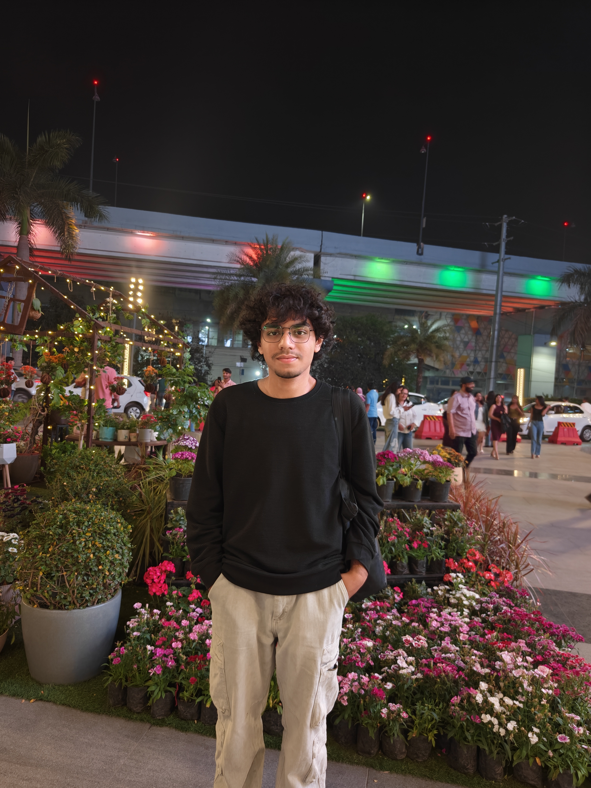

Research & Core Concepts
In computational robotics and swarm telemetry, defining formal bounds for agent configurations is critical for state estimation. A group of unmanned aerial vehicles (UAVs) can efficiently obtain the information of an unknown target or location of interest. My current research trajectory focuses on evaluating these constraints to maximize information capture during localized search patterns.
Professional Experience
Summer Research Intern
MuSiC@IISERB: Multi-agent SImulation & Control Lab (May 2026 – Present)
Developing localization algorithms and tracking simulations for Unmanned Aerial Vehicles (UAVs). Formulating cooperative protocols for unicycle vehicles to achieve optimal target-centric fixed formations and target-centric circumnavigations around moving targets. Implementing cooperative extended information filters (EIF) to localize unknown moving target states utilizing noisy measurements from the heterogeneous sensing network.
Trainee Member
EECS Club | IISER Bhopal (Oct 2025 – Present)
Contributing full-stack development implementations to Tune Tracer, a collaborative music tracking application. Architecting structural API pathways and engineering scalable database models for streamlined user interactions. (GitHub Repository)
Lead Android ROM Developer
Trinity Organisation (Aug 2022 – Feb 2023)
Compiled custom Android distributions utilizing the Android Open Source Project (AOSP) ecosystem for diverse hardware frameworks Target hardware environments included the Realme X ("RMX1901"), Motorola X4 ("Payton"), and the MediaTek-powered Redmi Note 8 Pro ("Begonia"). . Patched, configured, and optimized monolithic Linux kernels to ensure maximum hardware abstraction layer stability and performance efficiency.
/* Sample low-level kernel driver optimization block */
void optimize_mtk_governor(struct device *dev, AlpineConfig *cfg) {
if (!dev || !cfg) return;
// Regulate CPU frequencies based on real-time swarm computation loads
unsigned int core_mask = cfg->active_cores;
regulator_set_voltage(dev->regulator, cfg->target_uv, MAX_UV);
pr_info("MuSiC Lab Hardware Gov: Active Swarm Swapped on Mask %X\n", core_mask);
}Core Committee Member
ESIC | IISER Bhopal (Sep 2025 – Present)
Serving as the Student Coordinator for the Animal Welfare Society (AWS). Structuring institutional animal healthcare pathways, organizing regional adoption campaigns, and managing operational campus volunteer metrics.
Technical Matrix
The following technical compilation indicates verified programmatic capabilities down to hardware level deployment:
| Category | Technologies & Frameworks |
|---|---|
| Languages | C, C++, Python, JavaScript, TypeScript, Java, Assembly, HTML/CSS |
| Tools & Systems | Git, GitHub, Linux/Unix Shell Scripting, AOSP Architectures, Makefiles |
| Specializations | Full-Stack Architecture, Kernel Cross-Compilation, Multi-Agent Simulations |
Education
Indian Institute of Science Education and Research (IISER) Bhopal
Sep 2025 – Apr 2029 (Expected)
Bachelor of Technology (B.Tech), Engineering Sciences
Specialization Stream: Electrical Engineering and Computer Science (EECS)
St. Francis School Indirapuram
Graduated Mar 2025
Higher Secondary Certification (Class XII)
- Leadership Roles: Appointed Head Boy of the Student Council (2023–24); Appointed President of the Media Club (2023–24) and Vice President (2022–23).
- Athletics: Badminton Gold Medalist for the school varsity squad and competitive state cluster brackets.